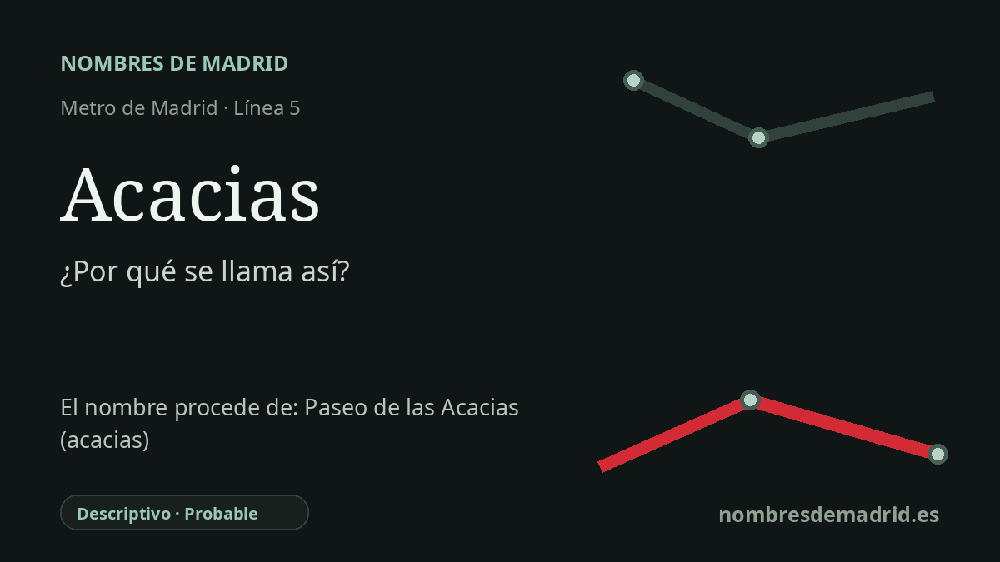

Publicado el · Investigación de Nombres de Madrid · Cómo verificamos cada origen · 8 fuentes consultadas
Respuesta rápida
Acacias toma su nombre del paseo de las Acacias, la vía madrileña y el barrio de Arganzuela cuyo nombre alude a las acacias. La estación de la línea 5 abrió con el primer tramo Callao-Carabanchel el 5 de junio de 1968.
La historia del nombre
La estación de Acacias toma su nombre del topónimo Acacias de su entorno, especialmente del paseo de las Acacias, en Arganzuela. El Callejero histórico oficial registra el paseo de las Acacias como vía madrileña desde el 29 de agosto de 1859 en Arganzuela, y la autoridad de transporte identifica la parada de Metro con el nombre de Acacias dentro de la red actual.
Detrás del nombre de la estación hay un topónimo descriptivo de calle. En la obra clásica de 1889 Las calles de Madrid, Hilario Peñasco y Carlos Cambronero describieron el paseo de las Acacias y explicaron el rótulo por referencia a la acacia, árbol usado como ornamento en calles y paseos. Por eso el nombre es botánico y no conmemorativo: no consta que recuerde a una persona, una batalla, un santo o una finca concreta.
El paseo forma parte de los accesos meridionales del Madrid antiguo, un espacio marcado por caminos, pendientes hacia el Manzanares, vivienda popular, mercados, talleres y, más tarde, infraestructuras ferroviarias y de Metro. Nombres cercanos como Ribera de Curtidores y El Rastro recuerdan el mundo antiguo de los mataderos, las tenerías y el comercio callejero al norte de Acacias, aunque ese contexto no es la fuente directa del nombre de la estación.
La estación de Metro entró en servicio con el primer tramo de la línea 5. La memoria de Metro de Madrid de 1968, citada por Memoria de Madrid, registra la inauguración de la línea Callao-Carabanchel el 5 de junio de 1968 y menciona sus correspondencias con la línea 3 en Embajadores y Callao; Acacias formaba parte de esa nueva ruta meridional. Hoy la estación también se entiende por su largo enlace peatonal con Embajadores.
La conclusión más sólida es, por tanto, sencilla: Acacias se llama así por una vía y un barrio locales cuyo nombre procede de las acacias. El origen general está bien apoyado por fuentes oficiales de callejero y transporte, además de literatura decimonónica sobre el callejero madrileño. Lo menos documentado es la fecha o acta administrativa exacta con la que Metro asignó el nombre a la estación, y la afirmación habitual de que el paseo se plantó específicamente con hileras de acacias en el siglo XIX requiere una fuente archivística más directa antes de formularse como hecho.